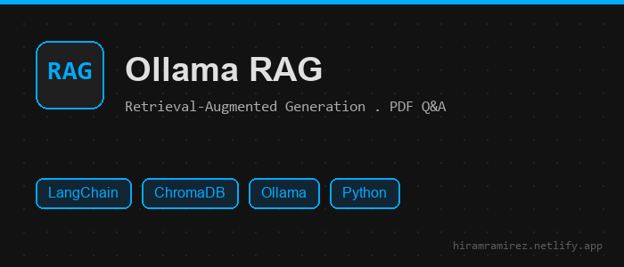
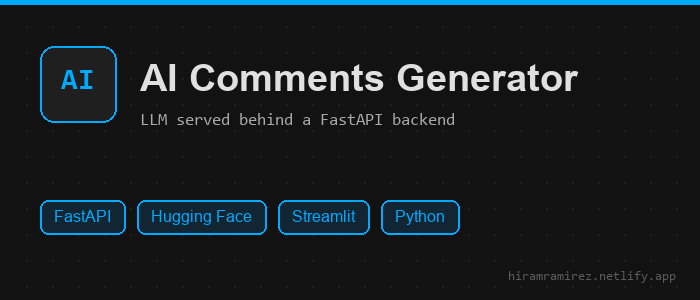
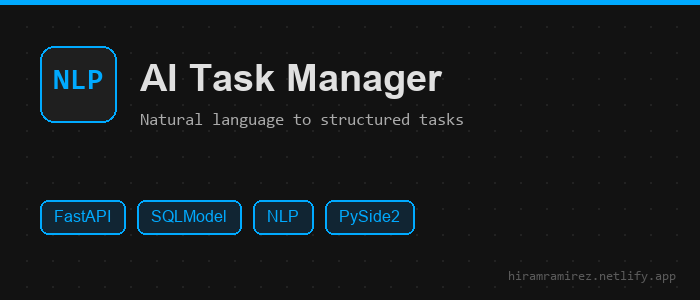
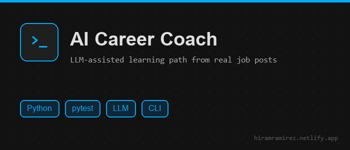
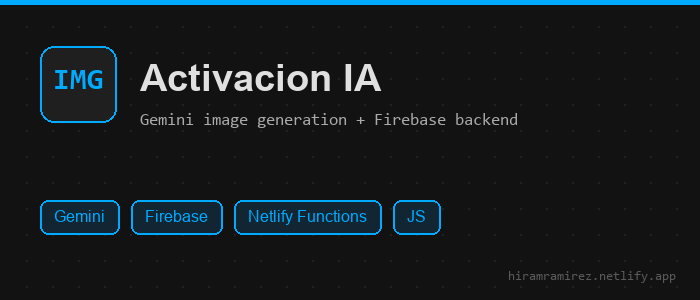
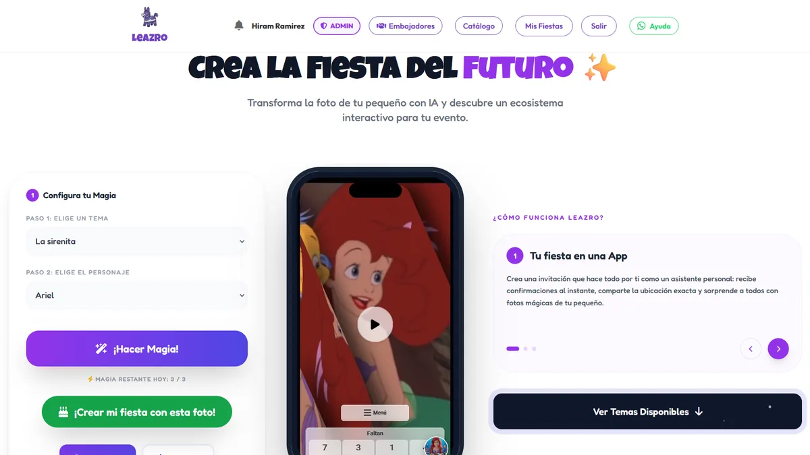
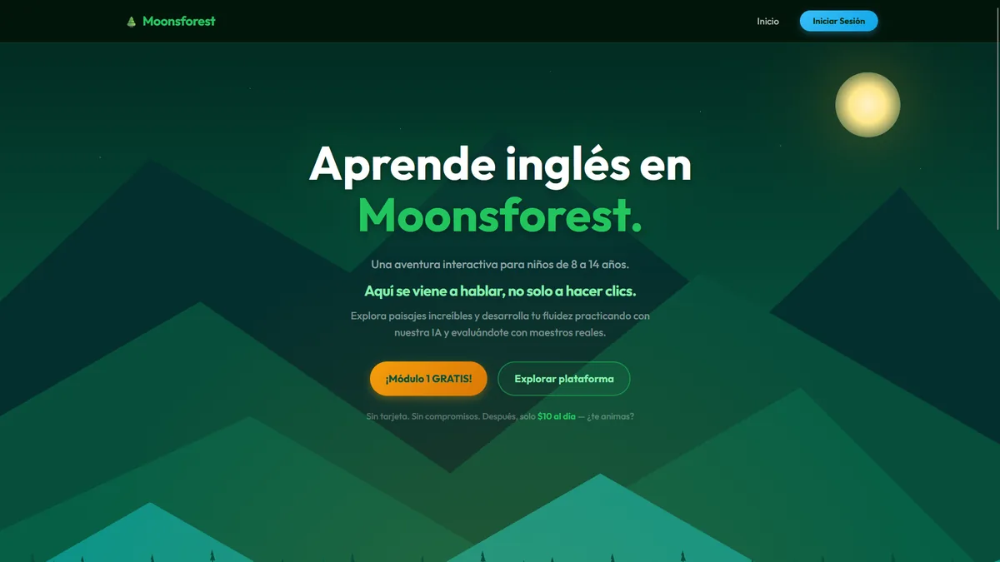

You can filter the projects by selecting the corresponding category.
💬 Ollama RAG

LangChain
ChromaDB
Ollama
RAG
Python
🤖 AI Comments Generator

FastAPI
Hugging Face
Fine-tuning
Streamlit
Python
📝 AI Task Manager

FastAPI
SQLModel
NLP
PySide2
Python
🎓 AI Career Coach

Python
pytest
LLM
CLI
🚗 Activación IA

Gemini
Firebase
Netlify Functions
JavaScript
✨ Leazro

JavaScript
Firebase
Stripe
Gemini API
Netlify
🌙 Moon's forest (EdTech)

Python
FastAPI
PostgreSQL
Stripe
Web Design
🎨 Web Design & Development
HTML
CSS
JavaScript
Responsive Design
Netlify